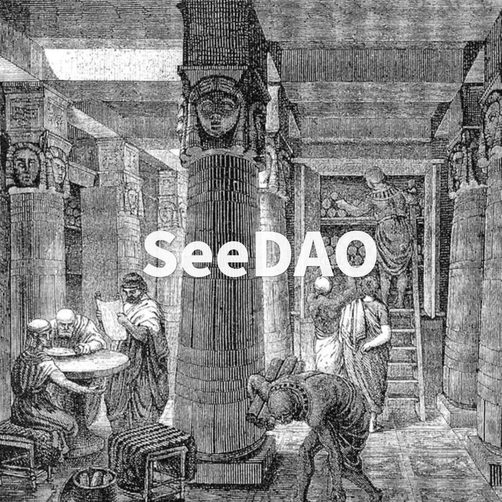

SeeDAO 小课堂 | See U IRL 说明
作者: SeeDAO
分类:
SeeDAO, DAO, SeeDAO小课堂, Web3, 全球 DAO 场计划 & See U IRL
在这里，你会了解到一场SeeDAO的活动会长什么样子、怎样承办一场SeeDAO的活动，以及了解在整个筹办过程中，SeeDAO怎样更好跟你协作。

嗨伙伴！恭喜你进入到活动说明页面——
在这里，你会了解到一场SeeDAO的活动会长什么样子、怎样承办一场SeeDAO的活动，以及了解在整个筹办过程中，SeeDAO怎样更好跟你协作。
👇 Before You Start
了解See U IRL的定义
See U IRL (In Real Life) 是指SeeDAO的线下活动，它是SeeDAO链接新人，让更多人知道、了解和onboarding的桥梁，是SeeDAO成为联结百万华人的数字城邦的重要组成部分。
了解See U IRL 基础准则
- 无论哪一类活动都应该遵循以下原则/价值观：
• 创造类See U IRL 体验，体现SeeDAO精神
根据当地城市特色，尽可能挖掘在地的精彩；
深度理解项目团队的需要，和了解参与者的需求；
宣传SeeDAO的相关愿景。
• 参会人员认可SeeDAO的价值取向：流动与活力
- 成员的义务和权利：
• 义务
在活动中最大程度传播SeeDAO，包括但不限于SeeDAO愿景、元规则等内容，尽力促成有新的伙伴了解、关注甚至愿意加入SeeDAO；
维护SeeDAO的品牌性，包括但不限于logo的使用规范、SeeDAO的声誉等。
• 权利
使用、调用SeeDAO相关资源，包括但不限于该城市的联络人、MOD等人力资源，线上传播、品牌素材等宣传资源；
成为所在城市的MOD/联络人，可以深度参与社区治理、社群活动等；
成为SeeDAO的城市活动代表/该场活动的代表，与其他社区合作组织相关活动。
- 发起活动之前，社区成员应该想好要发起的是什么类型的活动，需要向SeeDAO申请什么资源，能为SeeDAO带来什么成果，以及最后的活动交付物。在有初步想法后，填写线下活动申请表。
了解 SeeDAO 三层提案
🚄SeeDAO 三层治理体系提案【SIP】
https://seedao.notion.site/SeeDAO-SIP-e1fb676af357451a9d1d953ec67e662f
🚄SeeDAO成员身份体系及对外title规范
https://seedao.notion.site/SeeDAO-title-3776ce83b95e4a5f9209d90911ed84c1
根据填写的proposal，确认以下内容是否有准备好
相关角色
• 嘉宾、主持人的title和头像，及其内容版权和肖像使用权沟通
• 场地方的相关介绍
• （如有）赞助商信息
确定活动议程
内含SeeDAO相关内容
媒体及宣发
• 内容筹备：线上线下宣传物料、社群、文案等
• 线上平台推广：可以使用项目组evenbrite账号等其他平台
• 当地社群联合推广 ：利用SeeDAO当地城市据点群、其他能触达的合作社群进行宣发*tips：当地社群和媒体，如有link到，建立搜集信息放到媒体渠道库中
风险方案
例如场地无法使用、嘉宾缺席、报名人数不足等解决方案
*建议以上信息沉淀在一个文档内，方便筹备过程中随时查阅、结束后落地复盘
现场筹备
• （根据活动需要）现场物料准备：海报、姓名卡、易拉宝等
• （根据活动需要）现场设备准备：投影仪、麦克风等
• 会场布置
影像留存
• 现场照片。可根据具体情况看是否需要添加水印
• （如需）视频制作
*建议每场活动可以拉一个小群，方便群内答疑（如活动时间、场地信息等），之后引流到新手营或是对应城市的SeeDAO据点群
活动review及积分发放
• 团队内部进行复盘会，如需可沉淀出SOP
• 填写 📇See U IRL 活动结项报告
https://seedao.notion.site/See-U-IRL-a9ee73451841406891f3d140c978b147
SBT发放
可以申请为现场参与者、志愿者、项目组发放SBT。
需要收集对应人员的钱包地址，填写申请表给项目组，由项目组来进行发放
https://docs.google.com/spreadsheets/d/1K4xiwSx9RxFtJW8dxqvi0eqXl3S1XTny9_pk30QSmPo/edit#gid=0
宣发支持
活动回顾文章。如有撰写需求，可联系项目小组或Suannai。撰写好进行审核后即可发布
*所有资料（包括文字、图片、视频等）均需进行沉淀，建议放入项目组Google Drive link ，或是自行创建之后共享
积分激励
根据P1提案规定，整个活动将最高可申请20000积分，并将在所有项目组成员内进行分配，包括发起人、统筹、志愿者等，具体数额可以由发起人决定。
城市活动的组织管理经验
SeeDAO线下活动设计有完整的SOP及申请流程，即时你曾经并未有过线下活动组织经验，借助SeeDAO已有的社群、DAO协作模式，可以让你快速掌握举办活动的技巧。
SeeDAO内个人声誉
举办线下SeeDAO成员见面会将会是极好地积累SeeDAO内个人声誉的方式，实现和SeeDAO伙伴之间的深度链接，建立个人影响力。
其他福利
See U IRL活动发起人，未来将会有机会获得SeeDAO举办的线下活动邀请，以及获得 SeeDAO 周边，如T恤/贴纸/帽子/卫衣等纪念品等。
如果你还不是SeeDAO成员，可以从社区联合的角度探索合作，例如支持本地的See U IRL活动，或者邀请SeeDAO成员参与你们社区的活动。
如果你已经是SeeDAO成员，则可以根据本SOP申请发起See U IRL活动。如果你所在的社区与本活动有结合点，可以在proposal中讨论成为本场活动的合作伙伴。
内容策划以及营销对于一场活动来说非常重要，我们有一份指南或许可以帮到你，同时，SeeDAO内部的据点群、相关小组可进行协作支持。
根据P1提案的设定，可以申请最高20000的SeeDAO积分，并无U或现金的预算。
目前仅SeeDAO L1及以上的贡献者可以发起See U IRL活动申请。如果您不是SeeDAO成员，我们可以考虑别的合作形式。
如果发起提案后未能如期结项，则视为提案流产。然而，如果您已经调用SeeDAO品牌小组资源公开宣传，请尽可能完成活动，不然将对SeeDAO品牌产生不好影响，并将影响您未来SeeDAO内提案的通过。如遇到难以完成活动的具体问题，可联系See U IRL项目组寻求帮助。